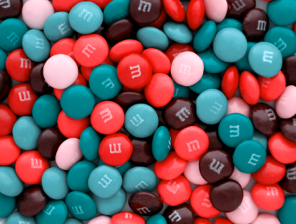
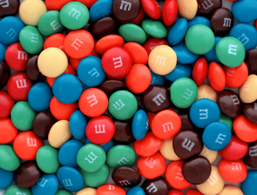

청색맹은 사람들이 청색을 정상적으로 인식하지 못하는 시각 장애입니다.
청색 감각을 조절하는 데 사용되는 콘색소의 결여 또는 손상으로 인해 발생합니다.
청색맹인 사람들은 청색과 다른 색상을 혼동하거나 정확하게 구별하지 못합니다.
일반적으로 청색을 녹색이나 회색으로 인식하며, 청색과 다른 색상의 명도나 채도 차이를 제대로 인식하지 못합니다.
청색맹은 상대적으로 희귀한 색맹 유형이며, 선천적인 유전적인 요인으로 발생하는 경우가 가장 흔합니다.

청색약은 청색 감각이 일부 손상된 상태로, 사람들이 청색을 다른 색상과 구별하기 어려워하는 시각적 이상 상태입니다.
청색 감각을 조절하는 데 사용되는 콘색소의 기능이 일부 손상되어 청색을 다른 색상과 혼동하거나 제대로 구별하지 못하는 현상이 나타납니다.
청색약인 사람들은 청색과 다른 색상을 구별하기 어려워하며, 청색의 명도나 채도에 일정한 변화를 감지하지 못할 수 있습니다.
일반적으로 청색을 녹색이나 회색으로 인식하거나 청색과 다른 색상의 차이를 알아차리지 못합니다.
청색약은 비교적 드물게 나타납니다.